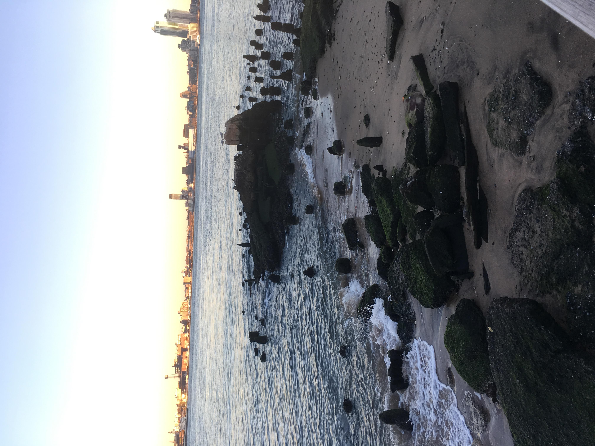

parkchive
>
eek
Go to second page

There was a mulch pathway, with trees that engulfed you. It felt like stepping into a forest. I haven't found anything like it again, south of central park. >


 There was a mulch pathway, with trees that engulfed you. It felt like stepping into a forest. I haven't found anything like it again, south of central park. >
There was a mulch pathway, with trees that engulfed you. It felt like stepping into a forest. I haven't found anything like it again, south of central park. >